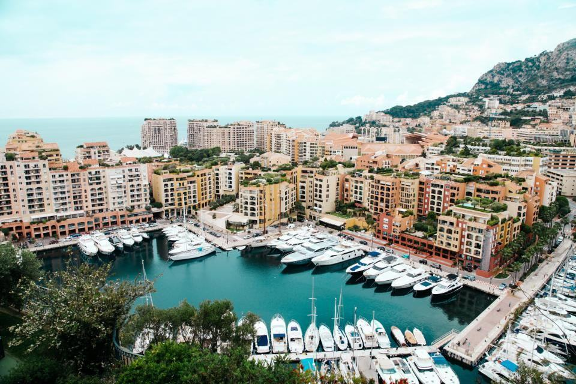
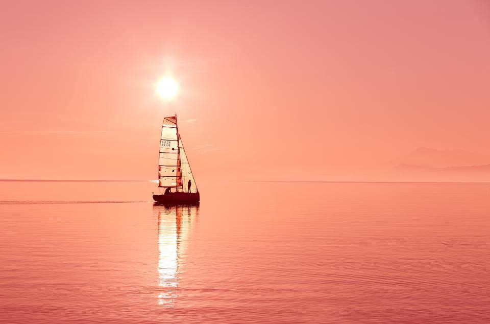

Om Munksjö Besiktning
Anders Brink arbetade som skadereglerare på ett försäkringsbolag i femton år och såg samma sak gång på gång: dyra skador som en noggrann besiktning hade upptäckt före köpet. 2008 startade han Munksjö Båtbesiktning i ett kontor vid Munksjön i Jönköping.
Sex besiktningsmän som granskar båtar före köp, efter skador och inför försäkring – utan att sälja, laga eller förvara något själva.
Anders Brink arbetade som skadereglerare på ett försäkringsbolag i femton år och såg samma sak gång på gång: dyra skador som en noggrann besiktning hade upptäckt före köpet. 2008 startade han Munksjö Båtbesiktning i ett kontor vid Munksjön i Jönköping.
Vi är i dag sex besiktningsmän, varav två båtbyggare, en marinelektriker och en motoringenjör. Vi gör runt 900 besiktningar per år och har en enda regel: vi säljer inga båtar, lagar inga båtar och tar ingen provision från någon. Det gör att både köpare, säljare och försäkringsbolag kan lita på rapporten.

Opartiska sedan 2008
Anders Brink arbetade som skadereglerare på ett försäkringsbolag i femton år och såg samma sak gång på gång: dyra skador som en noggrann besiktning hade upptäckt före köpet. 2008 startade han Munksjö Båtbesiktning i ett kontor vid Munksjön i Jönköping.
Senaste nytt

Hösten är bästa tiden att köpa begagnat, och båten står redan på land för fuktmätning.

Så använder vi termografi för att hitta fukt och glappkontakter.

Blöta däck, slitna bälgar, dåliga gasslangar, oxiderade kontakter och lösa bottenstockar.
Vilken båt ska besiktas?
Skicka länk till annonsen eller båtens uppgifter och var den står, så föreslår vi en tid.
- Telefon
- 070-174 06 58
- E-post
- besiktning@munksjobat.se
- Öppettider
- Mån–fre 8–17, besiktningar även lördagar april–oktober
Kontakta oss
- Kontor
- Munksjögatan 21
553 21 Jönköping - Telefon
- 070-174 06 58
- E-post
- besiktning@munksjobat.se
- Öppettider
- Mån–fre 8–17, besiktningar även lördagar april–oktober